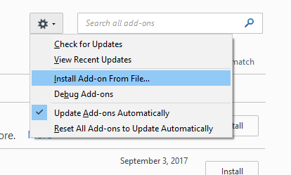
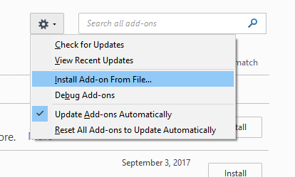

-
installez l'add on ImportExportTools
- téléchargez le plugin ici
-
installez le plugin
 

- redemarrez thunderbird
-
exportez votre arborescence de mails

-
compressez le dossier exporté dans un fichier .zip
- envoyez l'archive zip en la téléchargeant dans l'interface ci-dessus